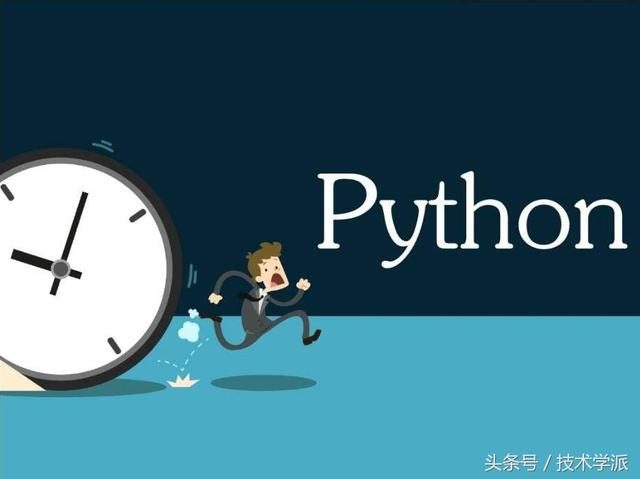

<!DOCTYPE html><html><head><meta charset="utf-8"><title>12道必会的Python面试题，附详细讲解 | 技术学派</title><meta name="viewport" content="width=device-width,initial-scale=1,maximum-scale=1"><meta name="keywords" content="IT培训, Python, 大数据, 人工智能, Web前端, PHP, "><meta name="description" content="无论是应聘Python方向的web开发，还是爬虫工程师，或是数据分析，还是自动化运维，都涉及到一些基础的知识！小编挑了一些Python的基础面试题，看看你能不能的答上来，也许面试的同学用的着！1.Python这么好，说说它的特性吧关键特性Python是一种解释型语言，这意味着，与C，C++不同，Python不需要在运行之前进行编译。它是边运行边解释的。Python是动态类型化的，这意味着当你声明它"><meta property="og:type" content="article"><meta property="og:title" content="12道必会的Python面试题，附详细讲解"><meta property="og:url" content="http://www.JiShuXuePai.com/blog/学习答疑/学习答疑/12道必会的Python面试题，附详细讲解/index.html"><meta property="og:site_name" content="技术学派"><meta property="og:description" content="无论是应聘Python方向的web开发，还是爬虫工程师，或是数据分析，还是自动化运维，都涉及到一些基础的知识！小编挑了一些Python的基础面试题，看看你能不能的答上来，也许面试的同学用的着！1.Python这么好，说说它的特性吧关键特性Python是一种解释型语言，这意味着，与C，C++不同，Python不需要在运行之前进行编译。它是边运行边解释的。Python是动态类型化的，这意味着当你声明它"><meta property="og:locale" content="zh-CN"><meta property="og:image" content="http://www.jishuxuepai.com/blog/学习答疑/学习答疑/12道必会的Python面试题，附详细讲解/01.jpg"><meta property="og:updated_time" content="2018-07-10T09:34:20.000Z"><meta name="twitter:card" content="summary"><meta name="twitter:title" content="12道必会的Python面试题，附详细讲解"><meta name="twitter:description" content="无论是应聘Python方向的web开发，还是爬虫工程师，或是数据分析，还是自动化运维，都涉及到一些基础的知识！小编挑了一些Python的基础面试题，看看你能不能的答上来，也许面试的同学用的着！1.Python这么好，说说它的特性吧关键特性Python是一种解释型语言，这意味着，与C，C++不同，Python不需要在运行之前进行编译。它是边运行边解释的。Python是动态类型化的，这意味着当你声明它"><meta name="twitter:image" content="http://www.jishuxuepai.com/blog/学习答疑/学习答疑/12道必会的Python面试题，附详细讲解/01.jpg"><link rel="stylesheet" href="/libs/bootstrap/bootstrap-grid.css"><link rel="stylesheet" href="/libs/font-awesome/css/font-awesome.min.css"><link rel="stylesheet" href="/libs/titillium-web/styles.css"><link rel="stylesheet" href="/libs/source-code-pro/styles.css"><link rel="stylesheet" href="/css/style.css"><script src="/libs/jquery/jquery.min.js"></script><link rel="stylesheet" href="/libs/lightgallery/css/lightgallery.min.css"><link rel="stylesheet" href="/libs/justified-gallery/justifiedGallery.min.css"><script>var _hmt=_hmt||[];!function(){var e=document.createElement("script");e.src="//hm.baidu.com/hm.js?4c1bd812de3c30edbaa2b803c66f0a04";var t=document.getElementsByTagName("script")[0];t.parentNode.insertBefore(e,t)}()</script></head></html><body><div id="wrap"><header id="header"><div id="header-outer" class="outer"><div class="container"><div class="container-inner"><div id="header-title"><h1 class="logo-wrap"><a href="/" class="logo"></a></h1></div><div id="header-inner" class="nav-container"><a id="main-nav-toggle" class="nav-icon fa fa-bars">菜单</a><div class="nav-container-inner"><ul id="main-nav"><li class="main-nav-list-item"><a class="main-nav-list-link" href="/">主页</a></li><li class="main-nav-list-item"><a class="main-nav-list-link" href="/edu/index.html">学编程</a></li><li class="main-nav-list-item"><a class="main-nav-list-link" href="/blog/">博客</a></li><li class="main-nav-list-item"><a class="main-nav-list-link" href="/tips.html">学习建议</a></li><li class="main-nav-list-item"><a class="main-nav-list-link" href="/about.html">关于</a></li></ul><nav id="sub-nav"><div id="search-form-wrap"><form class="search-form"><input type="text" class="ins-search-input search-form-input" placeholder="搜索"> <button type="submit" class="search-form-submit"></button></form><div class="ins-search"><div class="ins-search-mask"></div><div class="ins-search-container"><div class="ins-input-wrapper"><input type="text" class="ins-search-input" placeholder="想要查找什么..."> <span class="ins-close ins-selectable"><i class="fa fa-times-circle"></i></span></div><div class="ins-section-wrapper"><div class="ins-section-container"></div></div></div></div><script>window.INSIGHT_CONFIG={TRANSLATION:{POSTS:"文章",PAGES:"页面",CATEGORIES:"分类",TAGS:"标签",UNTITLED:"(未命名)"},ROOT_URL:"/",CONTENT_URL:"/content.json"}</script><script src="/js/insight.js"></script></div></nav></div></div></div></div></div></header><div class="container"><div class="main-body container-inner"><div class="main-body-inner"><section id="main"><div class="main-body-header"><h1 class="header"><a class="page-title-link" href="/categories/学习答疑/">学习答疑</a><div class="author"></div></h1></div><div class="main-body-content"><article id="post-学习答疑/12道必会的Python面试题，附详细讲解" class="article article-single article-type-post" itemscope itemprop="blogPost"><div class="article-inner"><header class="article-header"><h1 class="article-title" itemprop="name">12道必会的Python面试题，附详细讲解</h1></header><div class="article-meta"><div class="article-date"><a href="/blog/学习答疑/学习答疑/12道必会的Python面试题，附详细讲解/" class="article-date"><time datetime="2018-07-09T06:11:18.000Z" itemprop="datePublished">2018-07-09</time></a></div></div><div class="article-entry" itemprop="articleBody"><p>无论是应聘Python方向的web开发，还是爬虫工程师，或是数据分析，还是自动化运维，都涉及到一些基础的知识！小编挑了一些Python的基础面试题，看看你能不能的答上来，也许面试的同学用的着！</p><h3 id="1-Python这么好，说说它的特性吧"><a href="#1-Python这么好，说说它的特性吧" class="headerlink" title="1.Python这么好，说说它的特性吧"></a>1.Python这么好，说说它的特性吧</h3><p>关键特性</p><ul><li>Python是一种解释型语言，这意味着，与C，C++不同，Python不需要在运行之前进行编译。它是边运行边解释的。</li><li>Python是动态类型化的，这意味着当你声明它们或类似的东西时，你不需要声明变量的类型。你可以x=1 ，然后x=”abc”是没有错误。</li><li>Python非常适合面向对象编程，因为它允许定义类以及组合和继承。Python没有访问修饰符。</li><li>在Python中函数是一等对象，这意味着它们可以在运行时动态创建，能赋值给变量或者作为参数传给函数，还能作为函数的返回值。</li><li>Python代码容易上手，开发速度很快，但运行速度通常比编译语言慢。幸运的是，Python允许包含基于C的扩展，所以瓶颈可以被优化掉。</li></ul><h3 id="2-单引号、双引号和三引号之间的区别"><a href="#2-单引号、双引号和三引号之间的区别" class="headerlink" title="2.单引号、双引号和三引号之间的区别"></a>2.单引号、双引号和三引号之间的区别</h3><p>单引号和双引号主要是用来表示字符串</p><p>比如:</p><ul><li>单引号:’python’</li><li>双引号:”python”</li></ul><p>区别:</p><p>若你的字符串里面本身包含单引号,必须用双引号包裹。</p><p>比如:”can’t find the log “</p><p>三引号</p><ul><li>三单引号:’’’python ‘’’,也可以表示字符串一般用来输入多行文本,或者用于大段的注释。</li><li>三双引号：”””python”””，一般用在类里面,用来注释类,这样省的写文档,直接用类的对象doc访问获得文档。</li></ul><h3 id="3-Python里面如何拷贝一个对象？"><a href="#3-Python里面如何拷贝一个对象？" class="headerlink" title="3.Python里面如何拷贝一个对象？"></a>3.Python里面如何拷贝一个对象？</h3><p>标准库中的copy模块提供了两个方法来实现拷贝.一个方法是copy,它返回和参数包含内容一样的对象.</p><p>使用deepcopy方法,对象中的属性也被复制</p><h3 id="4-Python的参数传递，是值传递还是引用传递？"><a href="#4-Python的参数传递，是值传递还是引用传递？" class="headerlink" title="4.Python的参数传递，是值传递还是引用传递？"></a>4.Python的参数传递，是值传递还是引用传递？</h3><p>Python的参数传递有：</p><ul><li>位置参数</li><li>默认参数</li><li>可变参数</li><li>关键字参数</li></ul><p>函数的传值到底是值传递还是引用传递，要看情况</p><p>不可变参数用值传递：</p><p>比如像整数和字符串这样的不可变对象，是通过拷贝进行传递的，因为你无论如何都不可能在原处改变不可变对象。</p><p>可变参数是用引用传递：</p><p>比如像列表，字典这样的对象是通过引用传递，和C语言里面的用指针传递数组很相似，可变对象能在函数内部改变。<br></p><h3 id="5-什么是lambda函数？它的好处是什么"><a href="#5-什么是lambda函数？它的好处是什么" class="headerlink" title="5.什么是lambda函数？它的好处是什么?"></a>5.什么是lambda函数？它的好处是什么?</h3><p>lambda 表达式，通常是在需要一个函数，但是又不想费神去命名一个函数的场合下使用，也就是指匿名函数。</p><p>lambda函数：首要用途是指点短小的回调函数。</p><blockquote><p>lambda [arguments]:expression</p><p>>&gt;&gt; a=lambdax,y:x+y</p><p>>&gt;&gt; a(3,11)</p></blockquote><p>好处：</p><p>lambda能和def做同样种类的工作，特别是对于那些逻辑简单的函数，直接用lambda会更简洁，而且省去取函数名的麻烦。</p><h3 id="6-字符串格式化-和-format的区别是什么？"><a href="#6-字符串格式化-和-format的区别是什么？" class="headerlink" title="6.字符串格式化: %和 .format的区别是什么？"></a>6.字符串格式化: %和 .format的区别是什么？</h3><p>字符串的format函数非常灵活，很强大,可以接受的参数不限个数，并且位置可以不按顺序，而且有较为强大的格式限定符(比如:填充、对齐、精度等)。</p><h3 id="7-Python是如何进行内存管理的？"><a href="#7-Python是如何进行内存管理的？" class="headerlink" title="7.Python是如何进行内存管理的？"></a>7.Python是如何进行内存管理的？</h3><p>Python引用了一个内存池(memory pool)机制，即Pymalloc机制(malloc:n.分配内存)，用于管理对小块内存的申请和释放</p><p>内存池（memory pool）的概念：</p><p>当创建大量消耗小内存的对象时，频繁调用new/malloc会导致大量的内存碎片，致使效率降低。内存池的概念就是预先在内存中申请一定数量的，大小相等 的内存块留作备用，当有新的内存需求时，就先从内存池中分配内存给这个需求，不够了之后再申请新的内存。这样做最显著的优势就是能够减少内存碎片，提升效率。</p><p>内存池的实现方式有很多，性能和适用范围也不一样。</p><p>python中的内存管理机制——Pymalloc：</p><p>python中的内存管理机制都有两套实现，一套是针对小对象，就是大小小于256bits时,pymalloc会在内存池中申请内存空间；当大于256bits，则会直接执行new/malloc的行为来申请内存空间。 关于释放内存方面，当一个对象的引用计数变为0时，python就会调用它的析构函数。在析构时，也采用了内存池机制，从内存池来的内存会被归还到内存池中，以避免频繁地释放动作。</p><h3 id="8-如何用Python来进行查询和替换一个文本字符串？"><a href="#8-如何用Python来进行查询和替换一个文本字符串？" class="headerlink" title="8.如何用Python来进行查询和替换一个文本字符串？"></a>8.如何用Python来进行查询和替换一个文本字符串？</h3><p>可以使用sub()方法来进行查询和替换，sub方法的格式为：sub(replacement, string[, count=0])</p><p>replacement是被替换成的文本</p><p>string是需要被替换的文本</p><p>count是一个可选参数，指最大被替换的数量</p><h3 id="9-Python里面search-和match-的区别？"><a href="#9-Python里面search-和match-的区别？" class="headerlink" title="9.Python里面search()和match()的区别？"></a>9.Python里面search()和match()的区别？</h3><p>match()函数只检测RE是不是在string的开始位置匹配，search()会扫描整个string查找匹配, 也就是说match()只有在0位置匹配成功的话才有返回，如果不是开始位置匹配成功的话，match()就返回none 。<br></p><h3 id="10-线程如何在Python中实现"><a href="#10-线程如何在Python中实现" class="headerlink" title="10.线程如何在Python中实现"></a>10.线程如何在Python中实现</h3><p>Python有一个多线程包threading，可以使用多线程来加快你的代码。但是Python有一个叫做Global Interpreter Lock（GIL）的构造。GIL确保只有一个’线程’可以在任何时候执行。</p><p>线程获取GIL，做一些工作，然后将GIL传递到下一个线程。这种情况发生得非常快，所以对于人眼而言，它可能看起来像你的线程并行执行，但它们实际上只是轮流使用相同的CPU内核。因此GIL的存在使得Python中的多线程无法真正的利用多核的优势来提高性能。</p><p>对于IO密集型操作，在等待操作系统返回的时候会释放GIL；再比如爬虫因为有等待的服务器的响应时间，可以利用多线程来加速！但是对于CPU密集型操作，只能通过多进程Multiprocess来加速。</p><h3 id="11-Python的参数传递，是值传递还是引用传递？"><a href="#11-Python的参数传递，是值传递还是引用传递？" class="headerlink" title="11.Python的参数传递，是值传递还是引用传递？"></a>11.Python的参数传递，是值传递还是引用传递？</h3><p>Python的参数传递有：</p><ul><li>位置参数</li><li>默认参数</li><li>可变参数</li><li>关键字参数</li></ul><p>函数的传值到底是值传递还是引用传递，要看情况</p><p>不可变参数用值传递：</p><p>比如像整数和字符串这样的不可变对象，是通过拷贝进行传递的，因为你无论如何都不可能在原处改变不可变对象。</p><p>可变参数是用引用传递：</p><p>比如像列表，字典这样的对象是通过引用传递，和C语言里面的用指针传递数组很相似，可变对象能在函数内部改变。</p><h3 id="12-数据仓库是什么？"><a href="#12-数据仓库是什么？" class="headerlink" title="12.数据仓库是什么？"></a>12.数据仓库是什么？</h3><p>数据仓库是一个面向主题的、集成的、稳定的、反映历史变化的、随着时间的流逝发生变化的数据集合。它主要支持管理人员的决策分析。</p><p>数据仓库收集了企业相关内部和外部各个业务系统数据源、归档文件等一系列历史数据，最后转化成企业需要的战略决策信息。</p><h3 id="特点："><a href="#特点：" class="headerlink" title="特点："></a>特点：</h3><ol><li><strong>面向主题</strong>：根据业务的不同而进行的内容划分；</li><li><strong>集成特性</strong>：因为不同的业务源数据具有不同的数据特点，当业务源数据进入到数据仓库时，需要采用统一的编码格式进行数据加载，从而保证数据仓库中数据的唯一性；</li><li><strong>非易失性</strong>：数据仓库通过保存数据不同历史的各种状态，并不对数据进行任何更新操作。</li><li><strong>历史特性</strong>：数据保留时间戳字段，记录每个数据在不同时间内的各种状态。</li></ol></div><footer class="article-footer"><a data-url="http://www.JiShuXuePai.com/blog/学习答疑/学习答疑/12道必会的Python面试题，附详细讲解/" data-id="cjjfie5xa002ja8fy8lsgla03" class="article-share-link"><i class="fa fa-share"></i>分享到</a><script>!function(n){n("body").on("click",function(){n(".article-share-box.on").removeClass("on")}).on("click",".article-share-link",function(t){t.stopPropagation();var e,a=n(this),o=a.attr("data-url"),r=encodeURIComponent(o),i="article-share-box-"+a.attr("data-id"),s=a.offset();if(n("#"+i).length){if((e=n("#"+i)).hasClass("on"))return void e.removeClass("on")}else{var l=['<div id="'+i+'" class="article-share-box">','<input class="article-share-input" value="'+o+'">','<div class="article-share-links">','<a href="https://twitter.com/intent/tweet?url='+r+'" class="article-share-twitter" target="_blank" title="Twitter"></a>','<a href="https://www.facebook.com/sharer.php?u='+r+'" class="article-share-facebook" target="_blank" title="Facebook"></a>','<a href="http://pinterest.com/pin/create/button/?url='+r+'" class="article-share-pinterest" target="_blank" title="Pinterest"></a>','<a href="https://plus.google.com/share?url='+r+'" class="article-share-google" target="_blank" title="Google+"></a>',"</div>","</div>"].join("");e=n(l),n("body").append(e)}n(".article-share-box.on").hide(),e.css({top:s.top+25,left:s.left}).addClass("on")}).on("click",".article-share-box",function(t){t.stopPropagation()}).on("click",".article-share-box-input",function(){n(this).select()}).on("click",".article-share-box-link",function(t){t.preventDefault(),t.stopPropagation(),window.open(this.href,"article-share-box-window-"+Date.now(),"width=500,height=450")})}(jQuery)</script></footer></div></article><section id="comments"><div id="gitalk_frame"></div></section></div></section><aside id="sidebar"><a class="sidebar-toggle" title="Expand Sidebar"><i class="toggle icon"></i></a><div class="sidebar-top"><p>关注我 :</p><ul class="social-links"><li><a class="social-tooltip" title="火星时代" href="http://edu.hxsd.com/edunew/topics/webfull/index.html" target="_blank"><i class="icon fa fa-dribbble"></i></a></li><li><a class="social-tooltip" title="weibo" href="#" target="_blank"><i class="icon fa fa-weibo"></i></a></li><li><a class="social-tooltip" title="rss" href="/atom.xml" target="_blank"><i class="icon fa fa-rss"></i></a></li></ul></div><nav id="article-nav"><a href="/blog/学习答疑/学习答疑/9张图让初学者读懂目前最火的编程语言及区别，你pick谁？/" id="article-nav-newer" class="article-nav-link-wrap"><strong class="article-nav-caption">下一篇</strong><p class="article-nav-title">9张图让初学者读懂目前最火的编程语言及区别，你pick谁？</p><i class="icon fa fa-chevron-right" id="icon-chevron-right"></i> </a><a href="/blog/学习答疑/学习答疑/新手程序员不知道的小技巧？你知道多少？/" id="article-nav-older" class="article-nav-link-wrap"><strong class="article-nav-caption">上一篇</strong><p class="article-nav-title">新手程序员不知道的小技巧？你知道多少？</p><i class="icon fa fa-chevron-left" id="icon-chevron-left"></i></a></nav><div class="widgets-container"><div class="widget-wrap widget-list"><h3 class="widget-title">分类</h3><div class="widget"><ul class="category-list"><li class="category-list-item"><a class="category-list-link" href="/categories/animate/">animate</a><span class="category-list-count">17</span></li><li class="category-list-item"><a class="category-list-link" href="/categories/git/">git</a><span class="category-list-count">1</span></li><li class="category-list-item"><a class="category-list-link" href="/categories/html/">html</a><span class="category-list-count">2</span></li><li class="category-list-item"><a class="category-list-link" href="/categories/js/">js</a><span class="category-list-count">5</span></li><li class="category-list-item"><a class="category-list-link" href="/categories/php/">php</a><span class="category-list-count">3</span></li><li class="category-list-item"><a class="category-list-link" href="/categories/vue/">vue</a><span class="category-list-count">1</span></li><li class="category-list-item"><a class="category-list-link" href="/categories/学习答疑/">学习答疑</a><span class="category-list-count">41</span></li><li class="category-list-item"><a class="category-list-link" href="/categories/插件资源库/">插件资源库</a><span class="category-list-count">4</span></li></ul></div></div><link rel="stylesheet" href="/css/tech/toc.css"><div class="widget-wrap widget-list widget-toc"><h3 class="widget-title">目录</h3><div class="widget"><div class="toc"></div><link rel="stylesheet" href="https://cdnjs.cloudflare.com/ajax/libs/tocbot/3.0.5/tocbot.css"><script src="https://cdnjs.cloudflare.com/ajax/libs/tocbot/3.0.5/tocbot.min.js"></script><script>$(function(){$(".main-body-content").find("h1,h2,h3").each(function(t){$(this).attr("id")||$(this).attr("id","list"+t)}),tocbot.init({tocSelector:".toc",contentSelector:".main-body-content",headingSelector:"h1, h2, h3",collapseDepth:2,positionFixedSelector:".widget-toc",fixedSidebarOffset:595,includeHtml:!1})})</script></div></div><div class="widget-wrap widget-list"><h3 class="widget-title">标签</h3><div class="widget"><ul class="tag-list"><li class="tag-list-item"><a class="tag-list-link" href="/tags/C/">C</a><span class="tag-list-count">2</span></li><li class="tag-list-item"><a class="tag-list-link" href="/tags/go/">go</a><span class="tag-list-count">1</span></li><li class="tag-list-item"><a class="tag-list-link" href="/tags/php/">php</a><span class="tag-list-count">1</span></li><li class="tag-list-item"><a class="tag-list-link" href="/tags/python/">python</a><span class="tag-list-count">17</span></li><li class="tag-list-item"><a class="tag-list-link" href="/tags/web前端/">web前端</a><span class="tag-list-count">2</span></li></ul></div></div><div class="widget-wrap widget-float"><h3 class="widget-title">标签云</h3><div class="widget tagcloud"><a href="/tags/C/" style="font-size:15px">C</a> <a href="/tags/go/" style="font-size:10px">go</a> <a href="/tags/php/" style="font-size:10px">php</a> <a href="/tags/python/" style="font-size:20px">python</a> <a href="/tags/web前端/" style="font-size:15px">web前端</a></div></div><div class="widget-wrap widget-list"><h3 class="widget-title">链接</h3><div class="widget"><ul><li><a href="http://edu.hxsd.com/edunew/topics/webfull/index.html">火星时代</a></li></ul></div></div></div></aside><script>$(function(){$(window).scroll(function(){240<=$(document).scrollTop()?($("#sidebar .sidebar-toggle").addClass("fix"),"block"==$("#sidebar .sidebar-toggle").css("display")&&$(".is-position-fixed").css("top","35px")):$("#sidebar .sidebar-toggle").removeClass("fix")})})</script></div></div></div><footer id="footer"><div class="top"><div class="inner"><div class="list"><div class="left clearfix"><dl><dt>关于我们</dt><dd><a href="/about.html" target="_blank">公司简介</a></dd><dd><a href="edu/index.html" target="_blank">联系我们</a></dd></dl><dl><dt>校区攻略</dt><dd><a href="edu/index.html" target="_blank">校区环境</a></dd><dd><a href="edu/index.html" target="_blank">住宿攻略</a></dd><dd><a href="edu/index.html" target="_blank">来校路线</a></dd></dl><dl><dt>课程培训</dt><dd><a href="edu/python.html" target="_blank">Python</a></dd><dd><a href="edu/python.html" target="_blank">Web前端</a></dd><dd><a href="edu/python.html" target="_blank">PHP</a></dd><dd><a href="edu/python.html" target="_blank">人工智能</a></dd><dd><a href="edu/python.html" target="_blank">大数据</a></dd></dl><dl><dt>常见问答</dt><dd><a href="edu/index.html" target="_blank">学费学时</a></dd><dd><a href="edu/index.html" target="_blank">学习方法</a></dd></dl></div></div><div class="tel"><tel>176-0025-8815</tel><span>北京市海淀区杏石口路81号火星时代大厦</span></div><div class="weixin"><div class="w1"> <span>头条号</span></div><div class="w1"> <span>官方微信</span></div></div></div></div><div class="bot">Copyright 2018 技术学派 京ICP备15015508号-3</div></footer><link rel="stylesheet" href="https://unpkg.com/gitalk/dist/gitalk.css"><script src="https://unpkg.com/gitalk/dist/gitalk.min.js"></script><script>var gitalk=new Gitalk({clientID:"2fbbb9980b49019d99a7",clientSecret:"152dd10e83ef6595761ea2185304f9ac8263573f",repo:"jsxp",owner:"li-kang",admin:["li-kang"]});gitalk.render("gitalk_frame")</script><script src="/libs/lightgallery/js/lightgallery.min.js"></script><script src="/libs/lightgallery/js/lg-thumbnail.min.js"></script><script src="/libs/lightgallery/js/lg-pager.min.js"></script><script src="/libs/lightgallery/js/lg-autoplay.min.js"></script><script src="/libs/lightgallery/js/lg-fullscreen.min.js"></script><script src="/libs/lightgallery/js/lg-zoom.min.js"></script><script src="/libs/lightgallery/js/lg-hash.min.js"></script><script src="/libs/lightgallery/js/lg-share.min.js"></script><script src="/libs/lightgallery/js/lg-video.min.js"></script><script src="/libs/justified-gallery/jquery.justifiedGallery.min.js"></script><script src="/js/main.js"></script></div></body>